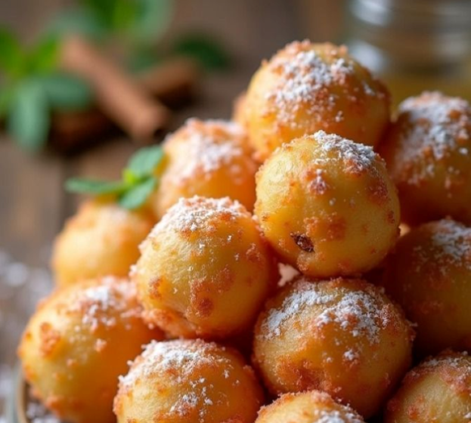
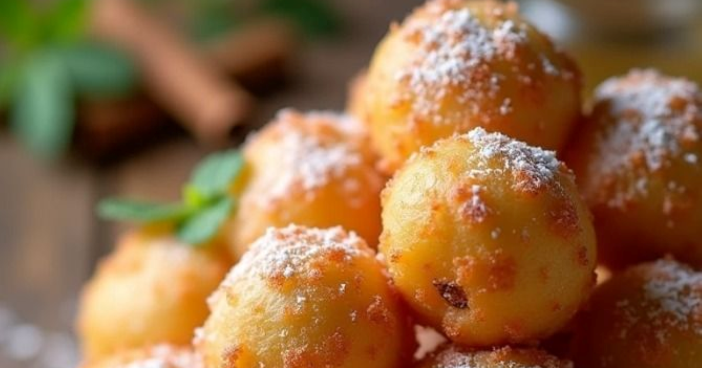

Dolci
Crispelle:
- 300 g riso per risotti
- 600 ml latte
- 200 ml acqua
- 150 g farina 00
- 60 g di zucchero
- 4 g cannella in polvere
- 1 limoni
- la scorza grattugiata
- 1arance
- la scorza grattugiata
- 8 g lievito per dolci
- 1 l olio di semi di arachidi per friggere
- 200 ml miele di zagara
- altro miele
- 20 ml succo d'arancia
- 1stecca di cannella
- zucchero a velo q.b.
- cannella in polvere q.b.


Procedimento:
- Mettiamo in una pentola il latte e l’acqua e portiamo a ebollizione.
- Aggiungiamo il riso e lasciamo cuocere a fuoco medio basso per circa 15-20 minuti. Il riso cuoce per assorbimento e dovrebbe essere pronto quando i liquidi si saranno asciugati. Assaggiamolo: se ancora è crudo o al dente, aggiungiamo un po’ di latte e continuiamo la cottura.
- Versiamo il riso in una ciotola e lasciamolo intiepidire per qualche minuto. Aggiungiamo poi lo zucchero, la farina, la cannella e la scorza grattugiata di arancia e limone. Mescoliamo.
- Versate anche l’acqua, sempre a temperatura ambiente o leggermente intiepidita così da facilitare la lievitazione dell’impasto
- Aggiungiamo il lievito per dolci e mescoliamo, dobbiamo ottenere un composto abbastanza compatto.
- Nel frattempo prepariamo lo sciroppo: mettiamo in una padella il miele, il succo di arancia e la stecca di cannella e scaldiamo sul fuoco fino a sfiorare l’ebollizione. Spegniamo e lasciamo intiepidire.
- Dividiamo il composto a metà e mettiamone una parte su un tagliere spolverizzato di farina. Stendiamolo con le mani e formiamo un rettangolo spesso circa 1,5 centimetri. Tagliamolo con una spatola in modo da ottenere dei bastoncini
- Arrotondiamo i bastoncini aiutandoci con poca farina e formiamo le crispelle. Procediamo così per tutto il composto di riso
- Scaldiamo l’olio di semi di arachidi in una pentola e portiamolo a temperatura. Immergiamo le crispelle, poche per volta, e friggiamole fino a quando saranno dorate e croccanti.
- Procediamo così per tutte le crispelle e man mano mettiamole in un piatto coperto con la carta assorbente da cucina o quella per fritti
- Mettiamo le crispelle di riso in una ciotola e passiamole nel miele. Decoriamo infine con zucchero a velo e cannella e, se vogliamo, aggiungiamo qualche fettina di arancia.